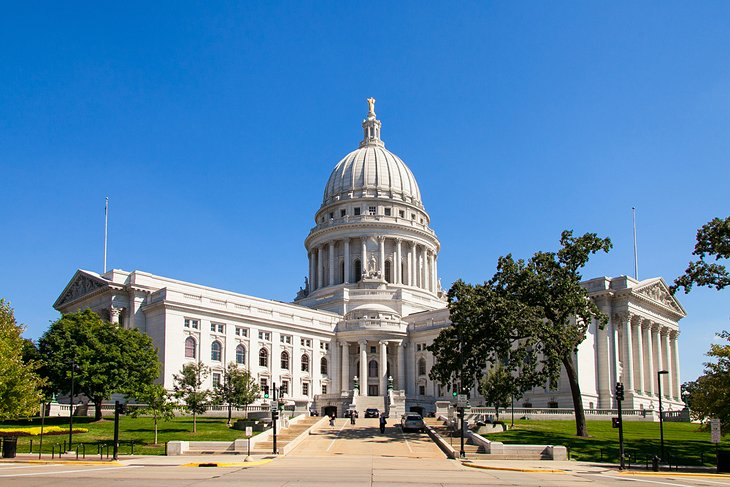

Attractions in Madison, Wisconsin
Museums
- Chazen Museum of Art
- A museum of fine art located on the University of Wisconsin-Madison campus.
- Wisconsin Historical Museum
- A museum that showcases the history of Wisconsin through exhibits and artifacts.
Parks and Outdoor Spaces
- Olbrich Botanical Gardens
- A beautiful garden featuring a variety of plants and seasonal displays.
- Memorial Union Terrace
- An outdoor space on the UW-Madison campus featuring a scenic view of Lake Mendota and live music in the summer.
Other Attractions
- State Street
- A pedestrian-friendly street lined with shops, restaurants, and entertainment venues.
- Wisconsin State Capitol
- A beautiful building located in the heart of downtown Madison, with guided tours available.
